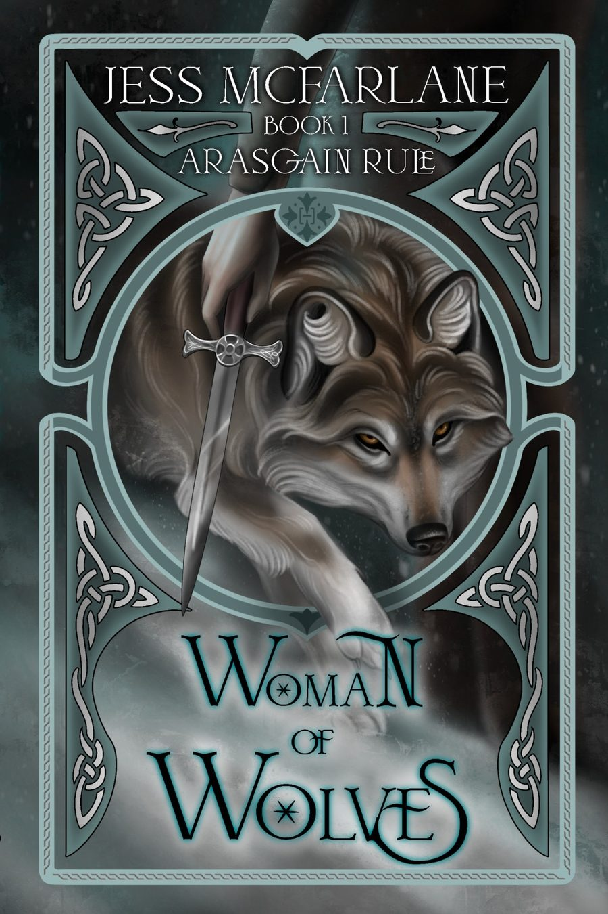
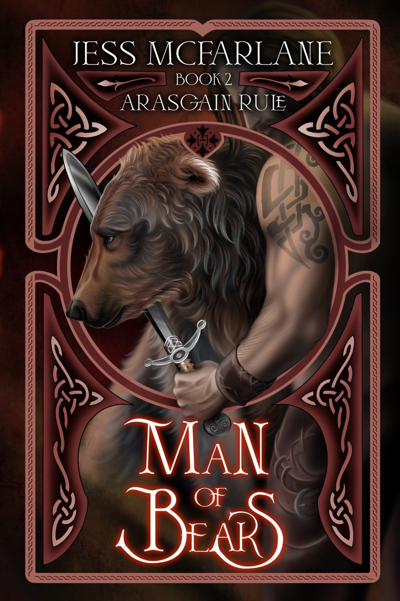
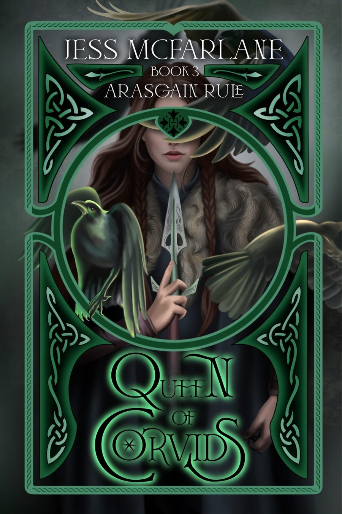
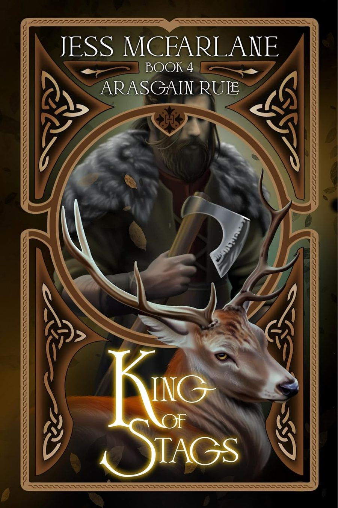

Arasgain Rule by Jess McFarlane
- Book 1, Woman of Wolves
She was ice, born amidst it, and she was Fáelben, bathed in the blood of wolves.
- Book 2, Man of Bears
Eryn would know her name.
- Book 3, Queen of Corvids
All the men she had killed, all the bodies that had fallen to build the path to where she was now.
- Book 4, King of Stags
She was a protector. A respected warrior. She was High Queen.
The four books
Eryn is an imagined Ireland. Across four books, Muirne Arasgain goes from chieftain of Inbiur to High Queen.
-
Man of Bears
Since defeating the tyrant chieftain MacMaol, Muirne Arasgain is struggling with grief and self-doubt.
-
Queen of Corvids
The corrupt chieftains of Eryn have been defeated, but instead of the peace she so desperately wants, Muirne Arasgain has attracted attention from the Kalti Queen, Ursula.
What you'll find in Woman of Wolves
Enemies to reluctant allies to lovers, feminine rage, cinnamon roll MMC, only one horse, forced proximity and found family.Jess, talking to Steph Huddleston
On the desk
68k
Jess is almost 68,000 words into an Australian contemporary romance, with a Palawa main character. She has drawn the characters too, and hopes to release it next year.
Also by Jess: Widow's Flame (2022), a Western, and UNAwere, a werewolf rom-com.
About Jess
The first book Jess ever wrote was a fantasy, with a talking dragon and a horse that spawned lightning. She's been reading fantasy since she was a kid.
She's a Palawa woman. She grew up on Bundjalung Country and lives on Yorta Yorta Country with her husband, Alec, and their German Shepherd, Sam.
The Arasgain Rule started while she was reading a lot of Irish folklore. She wanted druids in it, and the Morrigan, who has always fascinated her. She loves corvids.
Read it with the playlist on
Jess made an official playlist for the Arasgain Rule. She's on Instagram as @jessmcfarlaneauthor.